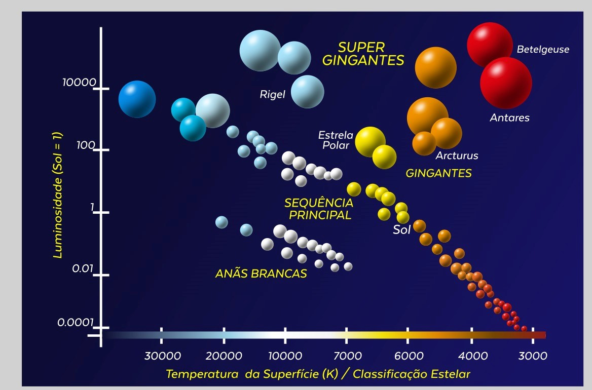

INTRODUÇÃO
O Diagrama de Hertzsprung-Russell (HR) é uma das
ferramentas mais fundamentais e amplamente utilizadas na
astrofísica. Criado no início do século XX pelos astrônomos
Ejnar Hertzsprung e Henry Norris Russell, esse diagrama
representa uma correlação entre a luminosidade das estrelas
e suas temperaturas superficiais, fornecendo informações
cruciais sobre a evolução estelar. Ao longo dos anos, o D
iagrama HR tornou-se um recurso indispensável para a
compreensão dos ciclos de vida das estrelas, revelando
etalhes sobre as fases pelas quais elas passam, desde a
sequência principal até suas fases finais, como anãs brancas,
gigantes vermelhas e supernovas.
O estudo do Diagrama HR permite aos astrônomos classificar estrelas de maneira mais precisa e identificar padrões que indicam suas idades, massas e composições químicas. A posição de uma estrela no diagrama fornece uma visão detalhada de sua fase evolutiva, permitindo que os cientistas prevejam seu futuro desenvolvimento e compreendam melhor o passado do universo. O diagrama também ilustra a relação entre a luminosidade e a temperatura das estrelas, evidenciando que estrelas mais quentes tendem a ser mais brilhantes, enquanto estrelas mais frias geralmente possuem uma luminosidade menor.
